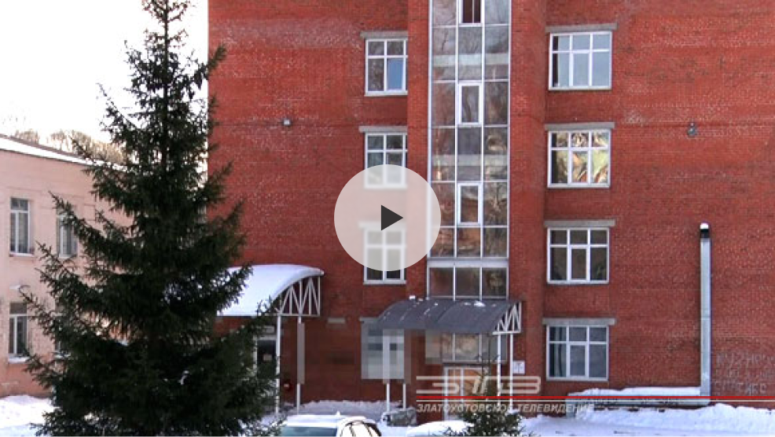

Госпитальная база закрыта, учреждение вернётся в «доковидный» режим после дезинфекции. Роддом Златоуста вновь откроет свои двери 8 февраля
Главная / Новости / Медицина
Ещё одна главная новость дня — с 8 февраля златоустовский роддом возвращается к привычному формату работы. Госпитальную базу для лечения больных коронавирусной инфекцией переводят в профильный режим. Приказ Министерство здравоохранения Челябинской области выпустило 27 января.
Напомним, перепрофилировать родильный дом решили в связи с ежедневным большим приростом златоустовцев, заболевших ковид-19. За это время лечение на госпитальной базе прошли свыше 1000 пациентов.

Александр Дорофеев
главный врач родильного дома г. Златоуста:
«На сегодняшний день в МПЦ находятся 46 больных. Большая часть из них будет переведена на базу квартала Медик и меньшая часть – на базу долечивания, в район метзавода. В воскресенье к нам приезжает дезостанция для обработки всех помещений. С 1 по 7 число проводится заключительная дезинфекция всего родильного дома. С 8 числа мы начинаем принимать беременных и рожениц нашего города и горнозаводской зоны».
Подготовка к возвращению профильной деятельности больниц проводится тщательным образом. Это полная дезинфекция помещений, забор ряда лабораторных анализов. И только после разрешения всех инстанций медицинское учреждение поступает к работе. Златоуст — не единственный город, где в связи со стабилизацией обстановки с коронавирусной инфекцией медицинские объекты возвращаются к плановому приёму пациентов. Решение по сокращению коечных мест для больных ковидом принимается оперативным штабом по борьбе с коронавирусной инфекцией при Правительстве Челябинской области. Оставшиеся ковид-базы перейдут в прежний режим работы при условии улучшения ситуации.